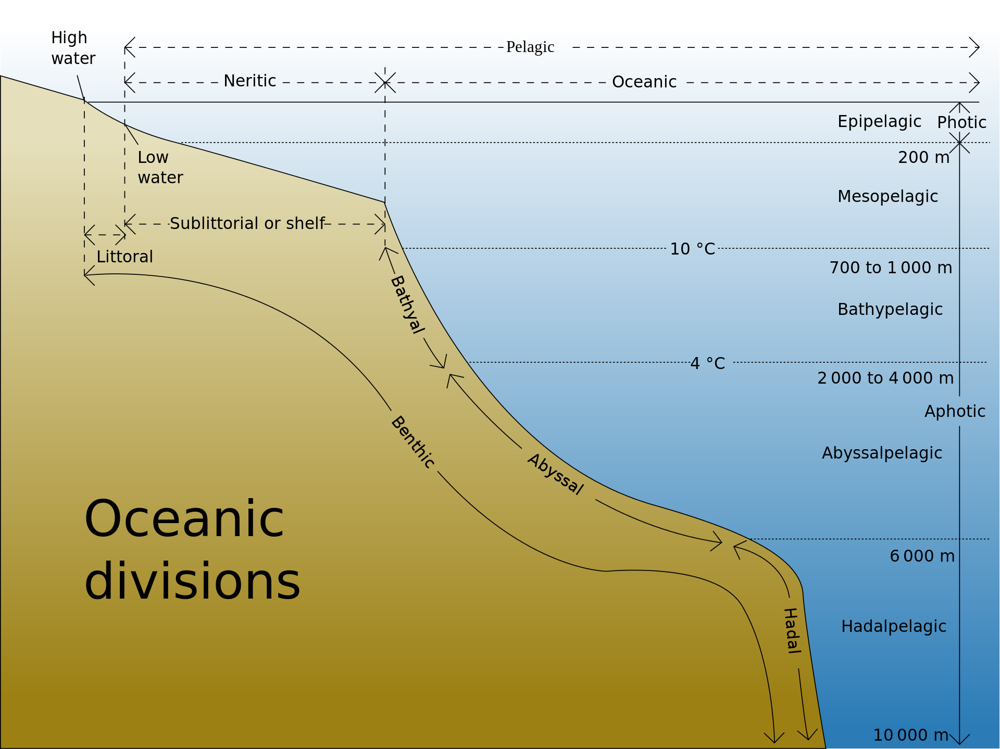

The Oceanic Zones
The oceanic zones/divisons are the open areas of the ocean beyond the contiental shelf. There are 5 oceanic zone and the color of this website's background will change in color depending on which zone it is representing and that zones depth. Each zone has longer scientific name that can be used as well.
| Casual Name | Scientific Name |
|---|---|
| Sunlight Zone | Epipelagic Zone |
| Twilight Zone | Mesopelagic Zone |
| Midnight Zone | Bathypelagic Zone |
| Abyssal Zone | Abyssalpelagic Zone |
| Hadal Zone | Hadalpelagic Zone |